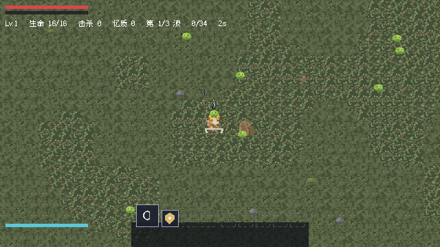

Q 版像素风、幸存者类自动战斗 Roguelite。当前 Demo：草原 + 森林，约 28 分钟。
Godot 4 开发。系统、数值、UI、代码与自动化测试由本人独立完成。
自动攻击天命技能波末三选一 四货币跨轮回刻痕

在轮回的长行中，记忆会替你拾遗。
五片地区组成这条长行。每一区都有自己的名字，也有自己的一句注脚。
| 地区 | 定位 | 注脚 |
|---|---|---|
| 初醒原（草原） | 序章 · Demo 第一关，8 分钟 | 「不记得来路的人，先记住脚下。」 |
| 槐庭（森林） | Demo 第二关，20 分钟 | 「树还在长。路已经换了。」 |
| 汀渊（沼泽） | Demo 之后 | 「水收下了一切。你上岸了。」 |
| 燧野（沙漠） | Demo 之后 | 「火照过的路，比记忆可靠。」 |
| 飒台（浮岛） | Demo 之后 | 「断掉的地方，风替你过了。」 |
三人在初醒原醒来。穿过各层之后，旅途的终点是魔王所在的城堡。
未竟之塔不在路上 —— 它每过一段路就会出现一次，是三人休整与存放记忆的地方（见「未竟之塔」页）。
| 货币 | 来源 | 用途 | 持续周期 |
|---|---|---|---|
| 屑 | 击杀即入账 | 祝福系统（升级三选一） | 本关 |
| 忆质 | 击杀即入账 | 未竟之塔的祭台 | 跨关结转 |
| 魂 | 归还未竟之影、结算 | 刻痕系统 | 跨轮回 |
三人共用一套成长体系，数值按「强在哪、弱在哪」互补设计。基础攻击以百分比计。
| 属性 | 剑之勇者 | 杖之勇者 | 弓之勇者 |
|---|---|---|---|
| 血量 | ×1.4 | ×0.8 | ×0.9 |
| 移速 | ×0.95 | ×1.00 | ×1.10 |
| 基础攻击 | 100% | 70% | 100% |
| 每级攻击成长 | +0% | +2%（前 5 级 +4%） | +0% |
| 第 10 级攻击 | 100% | 100%（追平点） | 100% |
| 第 30 级攻击 | 100% | 140% | 100% |
| 武器形态 | 近战扇形（剑/斧/镰） | 远程群伤（法杖/法器） | 单体＋贯穿（弓） |
| 被动 | 地形减速抗性 −40%；受击无敌帧更长 | 无 | 屏边预警提前 0.5s；距离越远伤害越高 |